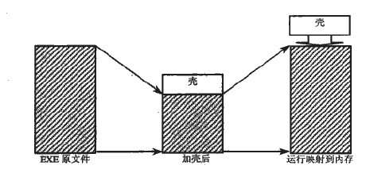
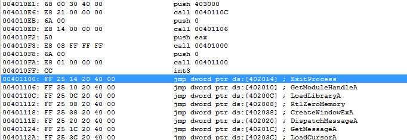
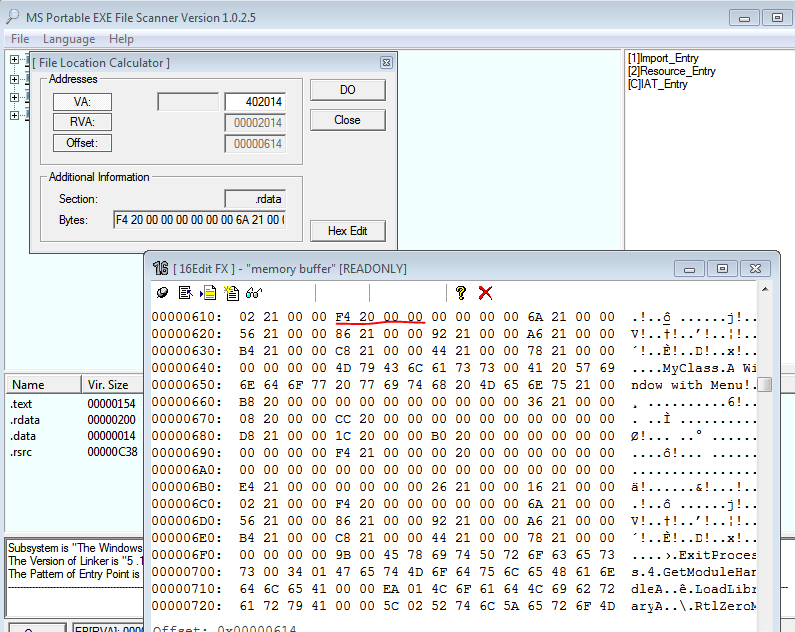
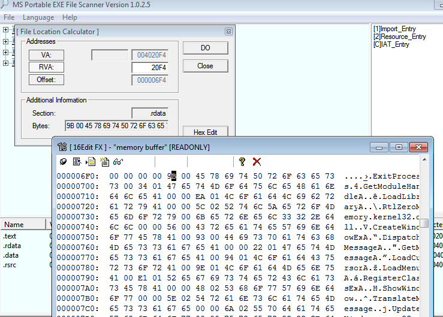
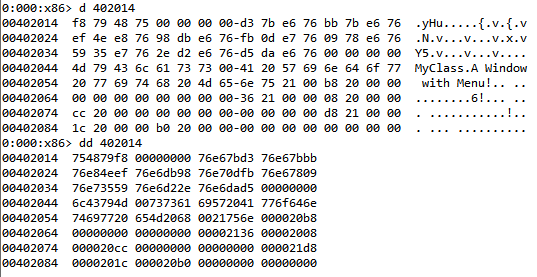
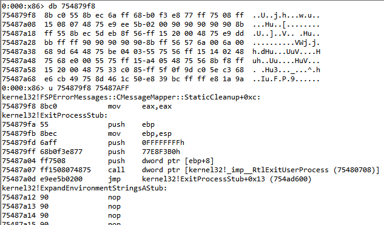
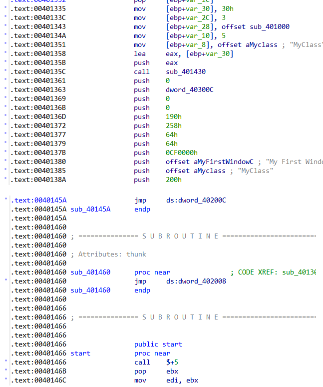
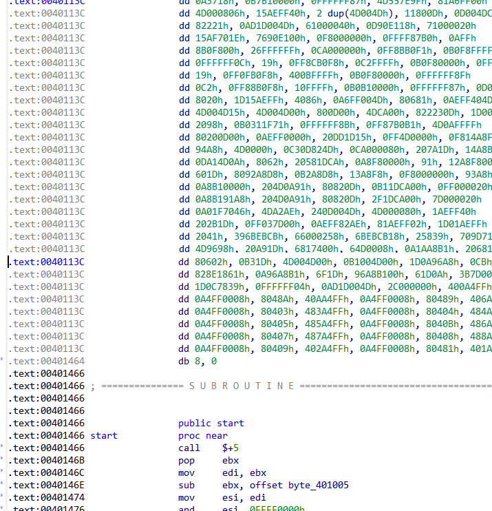
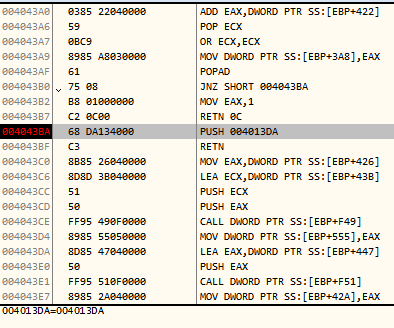
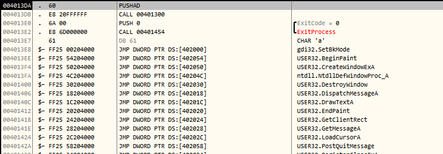

简介
今天来讨论一下PE文件的壳，壳主要用于PE文件的商业保护，以此达到软件不被暴掉的可能性，随着破解知识的普及，软件的壳也愈加复杂才可勉强不被暴。
壳的一个加载过程在许多书上都将过，这里就以图来复习一次：

这张图其实是一种情形，原程序被压缩引擎压过，还可以是在EXE文件上直接加壳不压缩，这样到省了壳的大小，但原EXE代码没有压缩，反而变大了一点，还有一种是在EXE文件的节区的空隙中添加，这样压缩过的文件和原文件一样大，但是对节区的大小有要求。这是三种常规的加壳思路。
如果单单是加一个简单的壳，象罗云彬的《windows32位环境下的汇编语言程序设计》中的那个AddCode就是一个典型代表。主要步骤如下：
首先在节区表上添加一个节区表信息，把代码写到文件的最后面（已经与新的节区表信息对应），主要注意一下，节区的SectionAlignment和FileAlignment，按照这两个参数写节区信息表，跳到节区表中对应文件偏移位置处，写入代码，代码在节区写不满，要填充0，保持文件对齐的值，通常200，最后是收尾工作，PE文件的NumberOfSections加1，SizeOfImage要加上新节区按照SectionAlignment的值对齐后的大小的值，SizeOfHeaders要按照FileAlignment对齐的，如果加上一个IMAGE_SECTION_HEADER，大小不过FileAlignment，就可能不用修改其值的，还有个SizeOfCode是添加代码的大小，就是将含有代码的节区的大小值相加（这个值已经按FileAlignment对齐，载节区表中）。
刚才讲的是上面说的第二个思路，还有两个思路，在下面的附件中有个与此类似的思路的一个，还有个是第三个思路的方法。
上面的这个方法实现是比较简单的，但是这种方法没有什么程序保护功能，下面讲一下又保护功能的方法。
要实现保护功能，可以保护的内容常见的有，导入函数，导出函数，代码段，数据段等。
如何实现导入函数的保护?
在PE文件的头中的DataDirectory有个导入函数的列表，指定RVA和大小，许多PE文件分析，如PEID，LoadPE，还有我的PE Scanner,都是根据这里找到函数的信息的。
这个RVA，在PE文件加载后，会指定到一个IMAGE_IMPORT_DESCRIPTOR，这个结构如下：
1 | typedef struct _IMAGE_IMPORT_DESCRIPTOR { |
在这个结构体中OriginalFirstThunk和FirstThunk虽然不指同一位置，但是它们指向的ThunkData所知的位置是相同的，等于一个是另一个的备份，在Windows的装载器加载时，会将FirstThunk指向的所有的ThunkData替换成ThunkData指向的函数的真正的地址，如下图：

在程序未加载时，可以看到磁盘文件如下：

402014的位置是000020F4，这个是RVA，在看这个ThunkData指向哪里，如下：

可以看出再过去两个字节就是ExitProcess的函数名，这是个IMAGE_IMPORT_BY_NAME的结构，前两个字节是HINT，是个无关紧要的WORD字段，大致熟悉了一下PE的加载原理，如果自己写保护导入表的保护的话，这些过程需要自己代码“手动”完成。
再来看一下PE文件加载后的情形，用windbg打开文件。

这些402014的位置已经被填充数据，而不再是原来的RVA：000020F4
1 | JMP DWORD DS：[402014] |
也就成了：
1 | JMP 754879f8 |
再看看754879f8处的数据：

可以看到这里到了Kernel32中的ExitProcessStub，整个加载过程也就明了了。
如何加载“藏”的导入表
因此如果要保护输入表里的函数，就必须把原来的导入表的那些信息（包括IMAGE_IMPORT_DESCRIPTOR和一系列的ThunkData）“藏”起来，自己定义一个IMAGE_IMPORT_DESCRIPTOR和ThunkData，用于定义自己必须的API函数，这样自己就不用再堆中找Kernel32的基址，查导出函数等一系列的复杂工作，比如自己定义两个位于Kernel32.dll中的函数：LoadLibraryA和GetProcAddressA，自己把原来的导入函数信息表“藏”了起来，自己在程序加载时要把找出来，并且在FirstThunk中找函数，因为导入表被“藏”，PE的装载器没有为程序将ThunkData的值换成据如754879f8等这样的真正的函数地址，所以自己要找函数（有按序号导入的和按名称导入的两种），需要注意的是若找到的函数是序号导入的话，需去掉高位用于检测的1（即与80000000H检测），然后直接将其作为函数的名称，用GetProcAddressA来获取地址，DLL的名称获取更加简单，直接，用Name的RVA加基址，即可，获取DLL名称的字符串，可用LoadLibraryA，来加载。
通过上面这些步骤，举例来说，使先前的402014的这些位置得到修正，自己用LoadLibrary加载Kernel32.dll，获取ExitProcess的地址，并且把得到的地址填到402014的位置处，这样ExitProcess函数才得以顺利执行，其他的函数其次类推，要把所有的IMAGE_IMPORT_DESCRIPTOR找遍，保证所有的函数地址都被填到恰当的位置。
关于加密数据和代码
上面的这些方法，其实只保护了导入表，但只要会点反汇编的人都能知道前面的代码，因为程序的入口虽改变，但是代码任在那里，可以改变偏移即可看到，如下两个对比图：
没有加密代码段的情况（start处是我的代码）：

加密代码段的情况（start是我的代码）：

加密代码段的情况下，需要在自己的代码里有揭秘代码的内容，以便代码得以执行，我的这个例子只是简单的转位，rol，ror，所以解密相当简单，如果要复杂的话，可以用压缩引擎压缩代码（lz77，lzss，或者复杂点的哈弗曼编码等等），这样还能更多节省空间，还可以用其他的密码学原理来加密等，具体细节，自由发挥。
但是这种方式基本上还是经不住考验，ASPack，UPX，Pecompact等，还有附件中我自己编写的这个，用的都是这种方法。
这种类型壳非常好脱，下面举个例子：

这是个ASPack的壳，刚开始的时候，断点处push后面的还是0，到此处已经变为004013da，这个正是原来程序的ep，其实ASPack前面的工作跟我的那个壳差不多，无非就是填充ThunkData和解密数据。

到此处，可见，ASPack把所有的ThunkData都填充了，用OllyDump顺便dump下，在看一下，导入表信息，借助LoadPE将其中的NtDllDefWindowProc_A改成DefWindowProcA，程序脱壳完成。
这种壳之所以好脱，是因为，外壳代码，在程序揭秘后又将代码写到原来的位置，相当于把一件东西藏进一个多么可靠的容器中来保护它，但是要使用它就必须拿出来（壳的自解密），而就在拿出来时，我们可以把它恢复原始形态！！！
如果设计一种机制，这个机制是每次需要执行代码时，先读取加密的数据，揭秘一条指令长的数据，然后再执行，然后再取，再揭秘，在执行，这个循环的过程一直执行下去，直到最后，而且用的空间只是一个指令长的地址空间，后面执行的代码覆盖前面的代码，短的指令，填充90H（nop），这样揭秘的数据不会记录，提高了安全性，但这个方法，需要面临下个数据的指令的长度，就需要个小型反汇编引擎嵌在壳上，还有eip跳转位置等的问题，但是就复杂了。
虚拟机的构想
上面的问题引起这个问题的产生，虚拟机就是模仿CPU指令执行，I/O环境等的一种机制，这种机制在虚拟机软件较常见，如：vmware，vbox等，壳也可以用虚拟机这种机制，只不过它主要模仿CPU的指令，也可模仿I/O环境等，将上面的机制设置的复杂一点，如：pop eax，转到虚拟机执行，变成，dec eax，inc eax转到虚拟机变成push eax，还可以更复杂，自己模拟一个I/O环境，每次IN 45H，表示eax加1，每次IN 46H表示eax减去1，IN 50H表示ebx加1等等（简而言之，就是模拟一套新的指令集，前面几个设想是自己天马行空，不必当真：）。
虚拟机还可以参入密码学加密机制，等。
总的来说，内容较多，涉及范围较广，而且若要设计起来，将是一个大的工程，估计壳的添加代码也较多。
最后一点补充
如果加壳的程序是个随机加载基址的程序，可能会影响到自己的揭秘后的代码正常执行，这时需要修正PE，去掉.reloc的节，主要是要将DataDirectory的随机加载的数据项清零，NumberOfSections减掉1，修正SizeOfHeaders，也有可能不需要修正，但是最重要的是要把OptionalHeader中的DllCharacteristics的值清零。
附件中有两个是向程序的空余间隙添加代码，因此程序的空余间隙必须大一点，否则会失败。